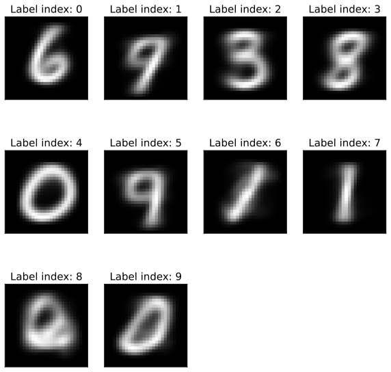
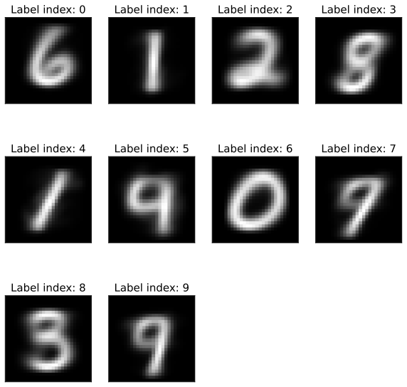

K-means#
Resources:
[Murphy, 2022], section 21.3
Skoltech lecture on clusterizaion
K-means on MNIST#
import numpy as np
import matplotlib.pyplot as plt
from sklearn.datasets import fetch_openml
%config InlineBackend.figure_format = 'svg'
X, y = fetch_openml('mnist_784', return_X_y=True, parser='auto')
X = X.astype(float).values / 255
y = y.astype(int).values
Apply mini-batch K-means:
from sklearn.cluster import MiniBatchKMeans
kmeans_mini = MiniBatchKMeans(n_clusters=10, n_init='auto')
%time kmeans_mini.fit(X)
print("Intertia:", kmeans_mini.inertia_)
print("Class labels:", kmeans_mini.labels_)
CPU times: user 2.15 s, sys: 431 ms, total: 2.58 s
Wall time: 2.51 s
Intertia: 2782612.55900901
Class labels: [9 8 7 ... 7 4 6]
Calculate silhouette score:
from sklearn.metrics import silhouette_score
%time silhouette_score(X, kmeans_mini.labels_, metric='euclidean')
---------------------------------------------------------------------------
KeyboardInterrupt Traceback (most recent call last)
File <timed eval>:1
File /Library/Frameworks/Python.framework/Versions/3.11/lib/python3.11/site-packages/sklearn/utils/_param_validation.py:211, in validate_params.<locals>.decorator.<locals>.wrapper(*args, **kwargs)
205 try:
206 with config_context(
207 skip_parameter_validation=(
208 prefer_skip_nested_validation or global_skip_validation
209 )
210 ):
--> 211 return func(*args, **kwargs)
212 except InvalidParameterError as e:
213 # When the function is just a wrapper around an estimator, we allow
214 # the function to delegate validation to the estimator, but we replace
215 # the name of the estimator by the name of the function in the error
216 # message to avoid confusion.
217 msg = re.sub(
218 r"parameter of \w+ must be",
219 f"parameter of {func.__qualname__} must be",
220 str(e),
221 )
File /Library/Frameworks/Python.framework/Versions/3.11/lib/python3.11/site-packages/sklearn/metrics/cluster/_unsupervised.py:131, in silhouette_score(X, labels, metric, sample_size, random_state, **kwds)
129 else:
130 X, labels = X[indices], labels[indices]
--> 131 return np.mean(silhouette_samples(X, labels, metric=metric, **kwds))
File /Library/Frameworks/Python.framework/Versions/3.11/lib/python3.11/site-packages/sklearn/utils/_param_validation.py:184, in validate_params.<locals>.decorator.<locals>.wrapper(*args, **kwargs)
182 global_skip_validation = get_config()["skip_parameter_validation"]
183 if global_skip_validation:
--> 184 return func(*args, **kwargs)
186 func_sig = signature(func)
188 # Map *args/**kwargs to the function signature
File /Library/Frameworks/Python.framework/Versions/3.11/lib/python3.11/site-packages/sklearn/metrics/cluster/_unsupervised.py:283, in silhouette_samples(X, labels, metric, **kwds)
279 kwds["metric"] = metric
280 reduce_func = functools.partial(
281 _silhouette_reduce, labels=labels, label_freqs=label_freqs
282 )
--> 283 results = zip(*pairwise_distances_chunked(X, reduce_func=reduce_func, **kwds))
284 intra_clust_dists, inter_clust_dists = results
285 intra_clust_dists = np.concatenate(intra_clust_dists)
File /Library/Frameworks/Python.framework/Versions/3.11/lib/python3.11/site-packages/sklearn/metrics/pairwise.py:2017, in pairwise_distances_chunked(X, Y, reduce_func, metric, n_jobs, working_memory, **kwds)
2015 else:
2016 X_chunk = X[sl]
-> 2017 D_chunk = pairwise_distances(X_chunk, Y, metric=metric, n_jobs=n_jobs, **kwds)
2018 if (X is Y or Y is None) and PAIRWISE_DISTANCE_FUNCTIONS.get(
2019 metric, None
2020 ) is euclidean_distances:
2021 # zeroing diagonal, taking care of aliases of "euclidean",
2022 # i.e. "l2"
2023 D_chunk.flat[sl.start :: _num_samples(X) + 1] = 0
File /Library/Frameworks/Python.framework/Versions/3.11/lib/python3.11/site-packages/sklearn/metrics/pairwise.py:2195, in pairwise_distances(X, Y, metric, n_jobs, force_all_finite, **kwds)
2192 return distance.squareform(distance.pdist(X, metric=metric, **kwds))
2193 func = partial(distance.cdist, metric=metric, **kwds)
-> 2195 return _parallel_pairwise(X, Y, func, n_jobs, **kwds)
File /Library/Frameworks/Python.framework/Versions/3.11/lib/python3.11/site-packages/sklearn/metrics/pairwise.py:1765, in _parallel_pairwise(X, Y, func, n_jobs, **kwds)
1762 X, Y, dtype = _return_float_dtype(X, Y)
1764 if effective_n_jobs(n_jobs) == 1:
-> 1765 return func(X, Y, **kwds)
1767 # enforce a threading backend to prevent data communication overhead
1768 fd = delayed(_dist_wrapper)
File /Library/Frameworks/Python.framework/Versions/3.11/lib/python3.11/site-packages/sklearn/metrics/pairwise.py:338, in euclidean_distances(X, Y, Y_norm_squared, squared, X_norm_squared)
332 if Y_norm_squared.shape != (1, Y.shape[0]):
333 raise ValueError(
334 f"Incompatible dimensions for Y of shape {Y.shape} and "
335 f"Y_norm_squared of shape {original_shape}."
336 )
--> 338 return _euclidean_distances(X, Y, X_norm_squared, Y_norm_squared, squared)
File /Library/Frameworks/Python.framework/Versions/3.11/lib/python3.11/site-packages/sklearn/metrics/pairwise.py:382, in _euclidean_distances(X, Y, X_norm_squared, Y_norm_squared, squared)
380 distances += XX
381 distances += YY
--> 382 np.maximum(distances, 0, out=distances)
384 # Ensure that distances between vectors and themselves are set to 0.0.
385 # This may not be the case due to floating point rounding errors.
386 if X is Y:
KeyboardInterrupt:
Now plot the cluster centers:
plt.figure(figsize=(10, 10))
for i in range(10):
plt.subplot(3, 4, i+1)
plt.xticks([])
plt.yticks([])
plt.imshow(kmeans_mini.cluster_centers_[i].reshape(28, 28), cmap='gray')
plt.title(f"Label index: {i}", size=15)

Can you guess who is who here?
Now take the true K-means.
from sklearn.cluster import KMeans
kmeans = KMeans(n_clusters=10, n_init='auto')
%time kmeans.fit(X)
print("Intertia:", kmeans.inertia_)
print("Class labels:", kmeans.labels_)
CPU times: user 17.4 s, sys: 578 ms, total: 18 s
Wall time: 10.4 s
Intertia: 2744522.4342046715
Class labels: [3 6 5 ... 7 3 0]
Silhouette score of K-means:
from sklearn.metrics import silhouette_score
%time silhouette_score(X, kmeans.labels_, metric='euclidean')
CPU times: user 4min 54s, sys: 22.9 s, total: 5min 17s
Wall time: 3min 21s
0.05599485888756957
Once again plot the centers of clusters:
plt.figure(figsize=(10, 10))
for i in range(10):
plt.subplot(3, 4, i+1)
plt.xticks([])
plt.yticks([])
plt.imshow(kmeans.cluster_centers_[i].reshape(28, 28), cmap='gray')
plt.title(f"Label index: {i}", size=15)
